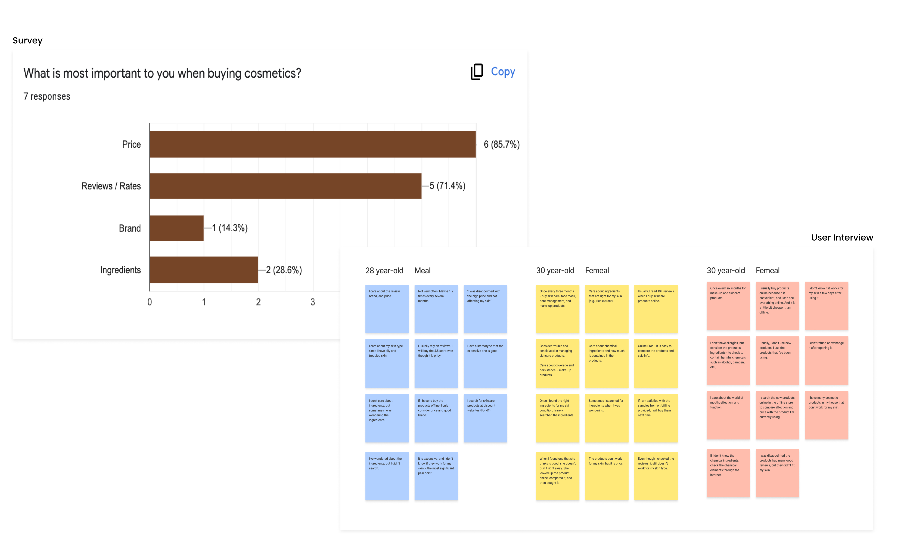
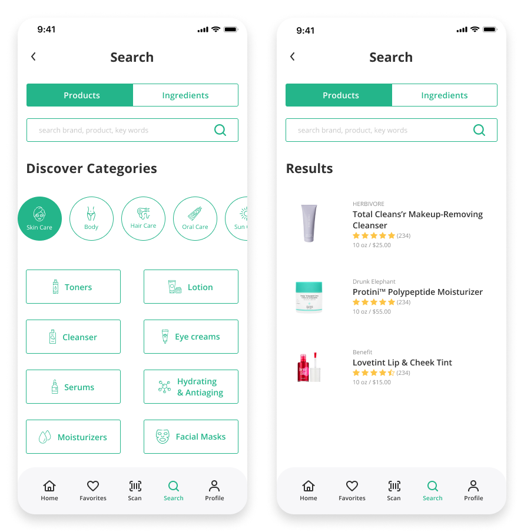

User Research, UI Design, Prototype, Wireframe, Visual Design
Team:
Individual
Overview
Checkco is an app that can check the ingredients of personal care and cosmetic products for those who want to avoid harmful components and chemicals so that users can find the right cosmetics for their skin and protect their skin health. It is the passion project that I conducted the whole process of conducting user interviews and wireframes.
Problem
The companies listed all ingredients, about 10 -20 on the package box, but most people don't know the ingredient's effection since they have to spend much time to search each component.
People were disappointed after using the products even though they read through many reviews and compared other products.
How might we...
help users resonable consumption and purchase cosmetice products safety?
Goal
User
Find the right cosmetic for their skin type and concern.
Educate themselves to avoid chemical and harmful ingredients.
Product
Provide safety information so that users can use the products without concern.
Quickly and easily search products and ingredients.
Research

Initial Assumptions:
How uers purchase cosmetic products?
What are the mort important factors when they purchase cosmetic products?
Do they care about ingredients?
I interviewed and surveyed 10 participants (7 survey + 3 user interview) who use daily care and cosmetic products. The ages are different between the 20s and 30s, mostly women.
Review & Price are top priorities when people purchase cosmetic products.
Sometimes reviews are not helpful since people have different skin types and concerns.
Ingredients are not their consideration, but people have curious about whether it is harmful or not.
Key insights
Review & Price are top priorities when people purchase cosmetic products.
Reviews are not always helpful since each person has different skin type and concern.
Ingredients are not their consideration, but people have curious about whether it is harmful or not.
Persona
Storyboard
Sketch
Lo-Fi Wireframe
Sign-up & Profile
Create your skin profile.
When users sign up for the app, the app will collect their personal and skin health information so that the app can provide the recommended cosmetic/skincare products on the home screen.
Search
Easy to search products/ingredients.
When users sign up for the app, the app will collect their personal and skin health information so that the app can provide the recommended cosmetic/skincare products on the home screen.

Product Details
Check product's safety.
When users sign up for the app, the app will collect their personal and skin health information so that the app can provide the recommended cosmetic/skincare products on the home screen.
Compare
Help you make a better decision.
Compare the price, safety and reviews of products.